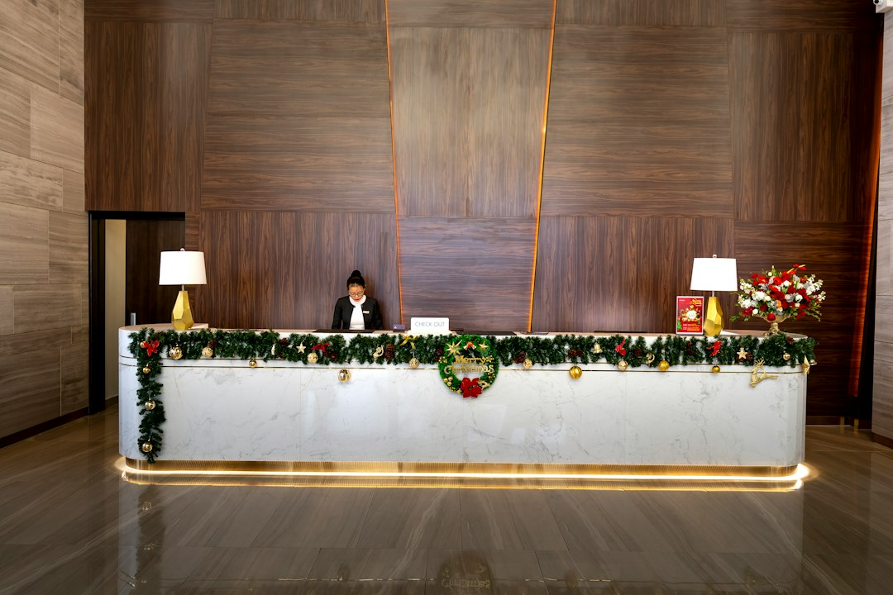

Come Concierge24 Ridefinisce la Gestione degli Ospiti nel Settore Turistico: Analisi e Trend Futuri

Ottimizzare la Gestione Ospiti con Concierge24: Trend e Soluzioni per Albergatori, Gestori di B&B e Property Manager
- Il settore turistico si evolve rapidamente, con aumenti nelle richieste digitali e multilingue.
- Richieste H24 e barriere linguistiche impattano negativamente su esperienza e costi operativi.
- Concierge24 offre un’assistenza AI multilingue per automatizzare e migliorare la gestione ospiti, con ROI comprovato.
Analisi approfondita della notizia e delle implicazioni operative
Il settore dell’ospitalità sta vivendo una trasformazione accelerata dall’adozione di nuove tecnologie digitali e dall’incremento del turismo internazionale. Negli ultimi 24 mesi si è osservato un boom nelle richieste di servizi digitali da parte dei clienti, in particolare per check-in/out automatizzati, informazioni su wifi, parcheggio e consigli su ristoranti o attrazioni turistiche. Parallelamente, l’aumento di turisti stranieri porta con sé significative barriere linguistiche e culturali, che complicano ulteriormente la comunicazione tra staff e ospiti.
Questo scenario impone agli albergatori, gestori di B&B, property manager e agenzie turistiche di rinnovare le proprie modalità operative, adottando soluzioni tecnologiche in grado di garantire rapidità, efficacia e personalizzazione del servizio. La pressione su reception e front desk è destinata a crescere, con il rischio di sovraccarico e disservizi se non si interviene in maniera strutturata.
Le conseguenze e i costi di non agire
Non adottare sistemi automatizzati per la gestione delle richieste ripetitive e multilingue comporta una serie di criticità operative ed economiche. Prima di tutto, il personale deve spesso impiegare una parte significativa del proprio tempo alla risposta manuale a richieste ricorrenti e semplici, come indicazioni su wifi, procedure di check-in e posti per il parcheggio. Questo tempo sottratto ad attività più a valore genera inefficienze e aumenti dei costi del lavoro.
Inoltre, le barriere linguistiche con turisti stranieri possono provocare incomprensioni, insoddisfazione e recensioni negative, fattori sempre più pericolosi in un mercato competitivo. L’impossibilità di offrire risposte rapide e precise rischia di tradursi in perdita di clienti e marginalità ridotta.
L’impatto economico di una gestione non ottimizzata si riflette dunque su più livelli: aumento del churn, spreco di risorse umane e minore capacità di personalizzare l’esperienza ospite, oggi elemento chiave per la fidelizzazione.
Come Concierge24 risolve il problema
Concierge24 di RM Studio si propone come una soluzione SaaS integrata specificamente studiata per il settore turistico e dell’ospitalità. Si tratta di un assistente vocale e testuale intelligente, chiamato Giulia, che opera 24 ore su 24 in 10 lingue diverse per supportare albergatori, B&B, property manager e agenzie turistiche nella gestione efficiente delle richieste ospiti.
Giulia automatizza le risposte a tutte le domande ripetitive più comuni – dal check-in al servizio wifi, dal parcheggio ai consigli su ristoranti o attrazioni – con un’interfaccia semplice e intuitiva sia via testo che vocale. Grazie all’integrazione di mappe GPS e funzionalità multimediali, è in grado di inviare ai clienti indicazioni precise e foto direttamente sui loro smartphone, ottimizzando i tempi di risposta e migliorando l’esperienza utente.
Concierge24 consente quindi di ridurre drasticamente il carico di lavoro manuale del personale di front desk, superare efficacemente le barriere linguistiche e garantire un servizio 24/7 senza aumentare i costi fissi. La soluzione SaaS prevede una prova gratuita di 7 giorni con 15 minuti di utilizzo inclusi, e successivamente ricariche a consumo a partire da €49, permettendo così un’adozione flessibile e scalabile.
| Aspetto | Gestione Tradizionale | Con Concierge24 |
|---|---|---|
| Risposte alle richieste H24 | Limitate all’orario di ricevimento, risposte ritardate | Automatizzate, disponibili 24/7 con assistente AI multilingue |
| Gestione Barriere linguistiche | Personale multilingue limitato, incomprensioni frequenti | Supporto in 10 lingue con traduzioni e suggerimenti contestualizzati |
| Personalizzazione consigli | Manuale, soggetta a errori e incoerenze | Consigli mirati con mappe GPS e invio foto in tempo reale |
| Costi operativi | Alti per ore lavoro extra e formazione | SaaS a consumo, flessibile e scalabile |
💡 Ti è stato utile questo approfondimento?
Condividilo con un collega o un amico del settore Albergatori, Gestori di B&B, Property Manager e Agenzie Turistiche a cui potrebbe interessare!
FAQ - Domande frequenti per professionisti dell’ospitalità
1. Concierge24 può integrarsi con i sistemi di gestione alberghiera esistenti?
Sì, Concierge24 è progettato per integrarsi facilmente con i principali PMS (Property Management Systems) tramite API, garantendo una digitalizzazione fluida e senza soluzione di continuità.
2. Quali lingue supporta Giulia, l’assistente AI di Concierge24?
Al momento, Giulia supporta 10 lingue principali, tra cui inglese, francese, spagnolo, tedesco, cinese, giapponese e altre, coprendo la maggior parte del turismo internazionale.
3. Come posso valutare l’efficacia di Concierge24 prima dell’acquisto?
RM Studio offre una prova gratuita di 7 giorni con 15 minuti di utilizzo inclusi senza richiesta di carta di credito, permettendo di testare tutte le funzionalità in un ambiente reale.
Inizia Subito
7 Giorni di prova con 15 minuti inclusi senza carta. Ricariche minuti a consumo da €49.
Fonti Ufficiali e Risorse Esterne
Scopri l'Intelligenza Artificiale per la tua attività
Ottimizza i processi e aumenta le vendite con le soluzioni B2B di RM Studio.
Scopri Concierge24